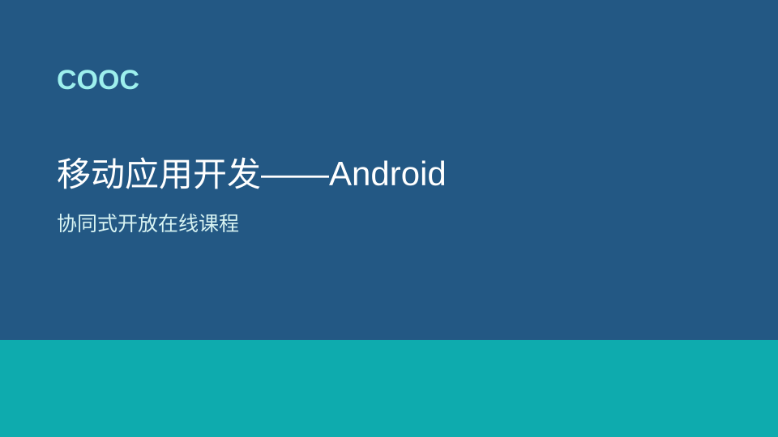

精选课程
移动应用开发——Android
课程简介
基于COOC平台建设在线的移动应用开发课程教学资源，在北京信息科技大学、北京大学、中原工学院、青岛工学院、长沙学院等多所高校现有教学资源的基础上，统筹规划知识体系，完成的一套较为完整的在线教案。
本课程包含Android平台的教学以及Android典型教学案例。

基于COOC平台建设在线的移动应用开发课程教学资源，在北京信息科技大学、北京大学、中原工学院、青岛工学院、长沙学院等多所高校现有教学资源的基础上，统筹规划知识体系，完成的一套较为完整的在线教案。
本课程包含Android平台的教学以及Android典型教学案例。
